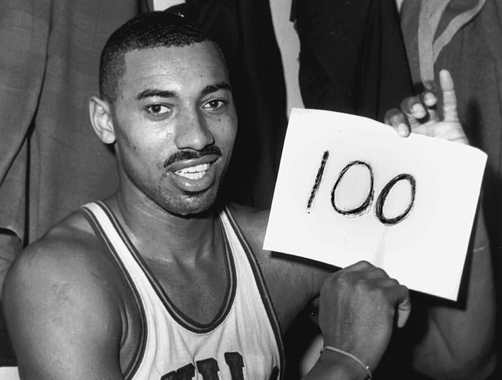
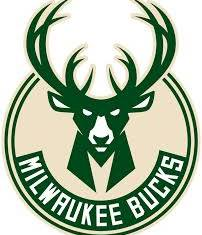
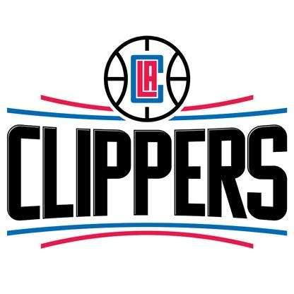
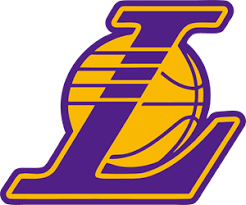
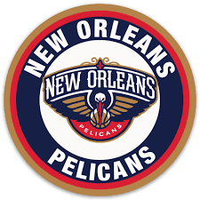
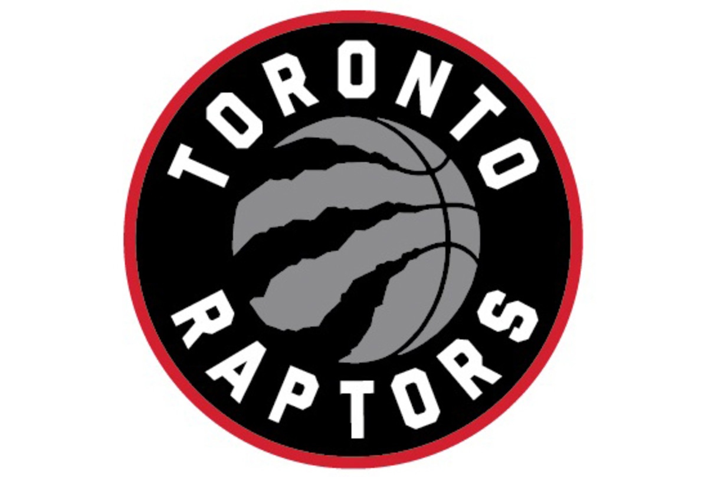
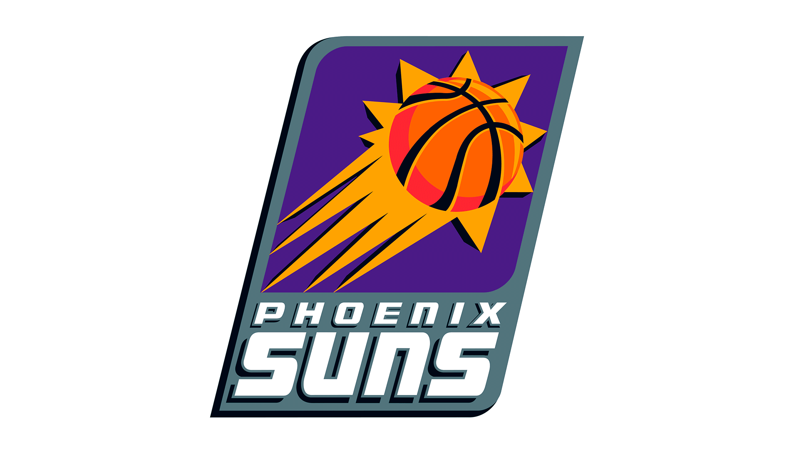
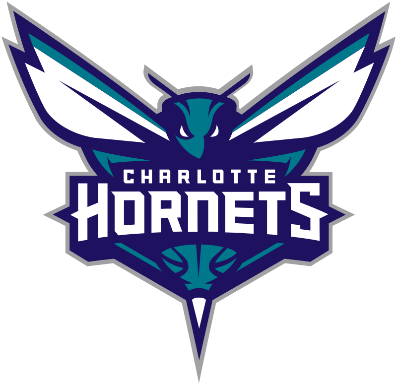

j'ai marqué le plus de points dans un match NBA!!!

wilt chamberlian en 1962







voici d'autres equipes
marchée
On ne peut pas marchée avec le ballon sauf si on fait un lay-up(déposer le ballon dirrèctement dans l'anneau ). De plus le maximum de pasfesable lors d'un lay-up est de 3 pas en NBA(c'est la règle du pas zéro) et de 2 en macth régionale.
reprise
Cette règle est fortement compliqué.Lorsequ'on fait rebondir le ballon.Il y a deux cas possibles: Premier cas: vous rebondissez le ballon ;aprés vous décidiez de prendre le ballon avec les deux mains et ensuite vous pouvez soit tirer soit passez (cela est accétable); ou Deuxieme cas: vous prenez le ballon est vous décidiez de le rebondir encore une fois(il y a donc "reprise" )
Mais il y a aussi la règle des reprise en l'air:le ballon ne doit jamais dépasser les épaules
faute
- faute sur contre: faute lors d'un contre et la balle est rendu aux adversaire
- faute sur tir: faute lors d'un contre mais des tirs sur la lancé franc sera accordee
une faute peut être liées au contact physiques ou un faute technique(liées a l'abitrage).Lors d'une faute sur tir il y a deux cas: Premier:la ballon n'a pas traversé le cercle; le jours obtenant la faute aurra donc la chance d'avoir deux ou trois lancés francs(trois lancés si la faute a était faite sur en dehors des lignes des trois points ) ou Deuxième cas:le ballon a traversé l'anneau ;donc le joueur obtient deux ou trois points(en fonction de l'endroit où le tir a été effectué) et en plus il aurra la chance d'avoir un lancé franc supplémentaire
retour en zone
un joueur ne peut pas revenir dans son camp
NOMBRE DE POINT
| ligne de tirs | point |
|---|---|
| ligne des trois points | trois points |
| Dans le grand cercle | deux point |
| ligne des lancés francs | un point |
inforamtion bonus pour les curieux
Les équipes les plus titrées
Les équipes les plus titrées sont : les Lakers , les Celtics et les Bulls
Dans quel pays est né Tony Parker ?
Il est né en Belgique
Connait-on le vainqueur NBA en 2022 ?
NON, Finale de 2022 n'a pas eu lieu a cause du confinement
Qu’est-ce que la levé de maillot ?
C’est quand on retire le numéro d’un joueur qui a marqué une équipe, il ne sera plus jamais attribué
Quelle sont les étapes d’une saison NBA ?
- Pré-saison : Fin septembre à fin octobre
- Saison régulière : Fin Octobre à avril
- All-star Week end
- Playoffs (séries éliminatoires)
- Finales NBA